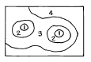
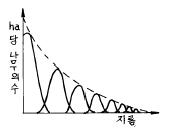
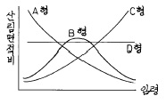

산림기사 (2004-05-23 기출문제)
1과목: 조림학
1. 이식된 사실이 없는 만 2년생의 묘목의 연령표시 방법으로 맞는 것은?
- 2 - 0 묘
- 2 - 1 묘
- 2 - 1 - 1 묘
- 1 - 1 묘
(정답률: 77%)

2. 묘목을 이식할 때 단근을 하는 주된 이유는?
- 양분 소모를 적게하기 위하여
- 세근의 발달 촉진을 위하여
- 수분 소모를 적게하기 위하여
- 노력을 절감하기 위하여
(정답률: 90%)
3. 군상개벌작업이 최초의 개벌의 모식도 중 가장 먼저 벌채 해야 할 곳은?

- 1
- 2
- 3
- 4
(정답률: 57%)
4. 가지치기의 영향은?
- 나무끼리의 생존 경쟁을 강화시킨다.
- 삼림의 모든 해에 약하다.
- 옹이 없는 완만재(完滿材)를 생산한다.
- 하목의 보호 생장에 지장이 있다.
(정답률: 63%)
5. 활엽수 묘목에서 마그네슘(Mg)결핍으로 나타나는 증상은 어느 것인가?
- 잎가부터 황백현상이 일어나며 엽맥만 남아서 망목상(網目狀)이 된다.
- 잎가가 황갈색으로 변하거나 갈색의 반점이 발생되고 밑에 있는 잎이 시든다.
- 잎의 폭이 좁아지고 짙은 녹색을 띄우며 부분적으로 적자색으로 변하고 시들어진다.
- 생장 초기에 어린 잎이 황화현상이 일어나고 새순의 생장이 부진하고, 잎이 작고, 위로 말린다.
(정답률: 34%)
6. 삼림 작업의 하나의 체계에 해당하는 숲이 다음과 같은 구조로 나타날 경우 어떻게 해석 할 수 있는가?

- 소교목, 중교목, 대교목으로 구성되어 있는 삼림
- 순환벌채를 받고 있는 택벌림
- 벌채를 받은 일이 없는 삼림
- 우리나라 소나무 숲에 흔히 나타나고 있는 구조
(정답률: 76%)
7. Pinus densiflora f. erecta 는 어느 지방의 생태형으로 간주되는가?
- 금강형
- 중남부 평지형
- 안강형
- 중남부 고지형
(정답률: 71%)
8. 가을에 종자(또는 열매)를 노천매장하는 것이 가장 이로운 것은?
- 상수리나무
- 오동나무
- 오리나무
- 잣나무
(정답률: 58%)
9. 종자의 산지와 조림지 사이의 입지조건 특히 기후조건이 다를 경우 나타나는 현상으로 잘못된 것은?
- 임목생장이 늦어진다.
- 임목재질이 우수해진다.
- 병해충에 대한 저항력이 약해진다.
- 종자발아나 묘목활착이 불량해진다.
(정답률: 89%)
10. 다음 삼림기후대에 대한 설명 중에서 바르게 기술하고 있는 내용은?
- 우리나라의 남한 지역에는 한대림이 전혀 없다.
- 난대림의 주요 구성 수종으로 가시나무를 들 수 있다.
- 지중해 연안 지역의 산림은 우리나라 온대 북부의 산림 구성과 유사하다.
- 열대림은 넓은 지역에 걸쳐 단일 수종으로 단순림을 구성할 때가 많다.
(정답률: 72%)
11. 다음 중 양성화를 갖는 수종은?
- 벚나무
- 오리나무
- 은행나무
- 상수리나무
(정답률: 65%)
12. 소나무 종자가 파종상에서 발아한 3주 후에 관찰할 수 있는 떡잎(자엽)의 수는?
- 1개
- 2개
- 3개
- 5-13개
(정답률: 55%)
13. 다음 중에서 영양소의 요구량에 따른 순서가 맞게 표현된 것은?
- 농작물> 침엽수> 활엽수> 소나무류
- 농작물> 활엽수> 침엽수> 소나무류
- 활엽수> 농작물> 침엽수> 소나무류
- 농작물> 활엽수> 소나무류> 침엽수
(정답률: 83%)
14. 다음 가운데 간벌의 개시 임령으로 적당하게 표현되지 않은 것은?
- 소나무 - 15 ~ 20년 (5,000본/ha 의 식재밀도 일 때)
- 잣나무 - 15 ~ 20년 (3,000본/ha 의 식재밀도 일 때)
- 낙엽송 - 10 ~ 15년 (3,000본/ha 의 식재밀도 일 때)
- 전나무 - 10 ~ 15년 (4,500본/ha 의 식재밀도 일 때)
(정답률: 46%)
15. 우리나라 산림토양에서 투수성, 통기성 및 토양 배수 상태로 비교적 높은 임목 생산성을 나타내는 토양 구조는?
- 주상
- 판상
- 괴상
- 입상
(정답률: 84%)
16. 접목의 이점이 아닌 것은?
- 클론의 보존
- 대목의 효과
- 접목 친화성
- 결과 촉진
(정답률: 40%)
17. 토양의 산성화에 대한 저항력이 가장 약한 수종은?
- 소나무
- 참나무류
- 느티나무
- 싸리나무류
(정답률: 52%)
18. 산벌작업에서 결실량이 많은 해에 일부 임목을 벌채하여 하종을 돕는 것으로 1회의 벌채로 목적을 달성 하는 것은?
- 후벌
- 종벌
- 하종벌
- 예비벌
(정답률: 77%)
19. 인공조림의 특징은?
- 주로 택벌작업지에 실시된다.
- 천연조림에 비해 성숙림이 늦게 이루어진다.
- 동령단순림 형성이 많다.
- 다양한 규격의 목재 생산이 용이하다.
(정답률: 60%)
20. 모수작업에 관해서 맞는 설명은?
- 양수 갱신에 적합하다.
- 모수는 되도록 한 지역에 집중적으로 남긴다.
- 자웅이주에 유리하다.
- 전체 재적의 약 50%를 벌채한다.
(정답률: 71%)
2과목: 산림보호학
21. 표징으로 나타나는 병원체의 기관 중에서 다음 중 생식기관인 것은?
- 분생자병
- 자좌
- 균사체
- 균핵
(정답률: 56%)
22. 산림화재의 예방 방법으로 방화선을 설치하여 산불의 확대를 막는데 이때 방화선의 넓이로 가장 적당한 것은?
- 1 ~ 3m
- 4 ~ 8m
- 10 ~ 20m
- 25 ~ 35m
(정답률: 62%)
23. 병원체의 침입 방법이 아닌 것은?
- 각피 침입
- 자연 개구를 통한 침입
- 상처를 통한 침입
- 지하수에서 용출 침입
(정답률: 50%)
24. 1년에 가장 여러번 발생하는 산림 해충은?
- 소나무좀
- 미국 흰불나방
- 솔나방
- 독나방
(정답률: 60%)
25. 4 ~ 5월경 향나무 줄기에 형성되는 향나무 녹병균의 포자는?
- 동포자
- 소생자
- 녹포자
- 하포자
(정답률: 36%)
26. 다음 해충 중 주로 목질부를 가해하는 해충은?
- 어스렝이 유충
- 박쥐나방 유충
- 잣나무 넓적잎벌
- 솔잎혹파리 유충
(정답률: 69%)
27. 미국 흰불나방의 월동 형태는?
- 번데기로 나무 틈에서
- 유충으로 나무에서
- 알로 땅속에서
- 성충으로 땅속에서
(정답률: 72%)
28. 생물적방제에 가장 많이 쓰이는 천적들은?
- 선충류
- 곤충류
- 서류
- 응애류
(정답률: 44%)
29. 다음 수종 중 대기오염에 약한 수종은?
- 졸참나무
- 은행나무
- 사철나무
- 소나무
(정답률: 75%)
30. 임업 해충을 방제하는 근본적인 이유로 가장 타당치 않는 것은?
- 목재 수확량의 감소 때문에
- 목재의 재질이 저하하기 때문에
- 산림에서 곤충의 발견 때문에
- 임업경영에 있어서 경영비 지출을 증대시키기 때문에
(정답률: 84%)
31. 다음에 열거한 곤충 가운데 익충(useful insect)은?
- 미류재주나방
- 잣나무넓적잎벌
- 소나무흰점바구미
- 꿀벌
(정답률: 80%)
32. 줄기녹병균이 나무에 침해하여 나타나는 병징과 관계가 없는 증상은?
- 근부 증상
- 녹색 증상
- 빗자루 증상
- 비대 증상
(정답률: 20%)
33. 묘포에서 모래 또는 유기질 토양을 섞어서 토질을 개량하고 상면(床面)을 15㎝ 정도로 높혀 다습하게 되는 것을 막기 위해 묘목 사이에 짚, 낙엽, 왕겨 등을 깔아 놓는 이유로 가장 타당한 것은?
- 상열(霜熱)피해의 예방
- 만상(晩霜)피해의 예방
- 서릿발(霜柱)피해의 예방
- 동상(冬霜)피해의 예방
(정답률: 48%)
34. 오동나무빗자루병의 매개충인 담배장님노린재가 오동나무에 가장 많이 서식하는 시기는?
- 3월 ~ 4월
- 4월 ~ 6월
- 7월 ~ 10월
- 10월 ~ 11월
(정답률: 62%)
35. 뿌리혹병균(근두암종병균)에 가장 감수성이 높은 것은?
- 소나무
- 잣나무
- 참나무
- 감나무
(정답률: 41%)
36. 솔잎혹파리의 생물적 방제 차원에서 현재 우리나라에서 사육하여 피해지에 방사하는 솔잎혹파리의 천적은?
- 상수리좀벌
- 노란꼬리좀벌
- 솔잎혹파리먹좀벌
- 남색긴꼬리좀벌
(정답률: 79%)
37. 다음 중 성충으로 월동하는 곤충은?
- 밤나무 순혹벌
- 소나무좀
- 독나방
- 솔잎혹파리
(정답률: 50%)
38. 다음 중 밤나무 흰가루병의 제1차 전염원이 되는 것은?
- 겨울포자
- 자낭포자
- 여름포자
- 유주자
(정답률: 79%)
39. 모잘록병균(苗立枯病菌)의 전반에 중요한 역할을 하는 것은?
- 곤충
- 토양
- 바람
- 새무리(鳥類)
(정답률: 89%)
40. 다음 중 산림화재에 의한 피해가 아닌 것은?
- 토양의 이화학적 성질 변화
- 산림의 생산능력 감퇴
- 임지 침강에 의한 토사 유출
- 화학적 양료의 공급에 의한 토양의 개량
(정답률: 83%)
3과목: 임업경영학
41. 여건이 같을 때 다음 벌기령 중 제일 먼저 벌기령에 도달하는 것은?
- 삼림 순수입 최고의 벌기령
- 토지 순수입 최고의 벌기령
- 재적 수확최고의 벌기령
- 화폐 수익최고의 벌기령
(정답률: 39%)
42. 다음 그림에서 우리나라의 현실적인 산림구조는 어느형에 속하는가?

- A형
- B형
- C형
- D형
(정답률: 56%)
43. 이령림의 평균임령이 아닌 것은?
- 본수령
- 현실령
- 재적령
- 면적령
(정답률: 53%)
44. 임지 기망가의 최고기(最高期)에 대한 기술 중 옳지 않은 것은?
- 이율이 크면 최고치에 도달하는 시기가 빠르다
- 간벌 수확이 클수록 최고치는 빨리 온다.
- 주벌수확이 증가율이 년령의 증가에 따라서 크면 클수록 임지기망가의 최고기는 늦게 온다.
- 관리비가 크면 클수록 임지 기망가의 최고기는 늦게 온다.
(정답률: 31%)
45. 생리적 벌기령(조림적 벌기령)을 적용하는데 있어서 고려하지 않아도 되는 사항은?
- 갱신사항
- 삼림생산의 보존
- 결실사항
- 목재운반 관계
(정답률: 69%)
46. 임업경영의 지도원칙 중 환경임업과 가장 관계가 적은 것은?
- 환경보전의 원칙
- 환경양호의 원칙
- 보속성 원칙
- 합자연성의 원칙
(정답률: 39%)
47. 면적당 임목의 현존량 측정시 가장 먼저 할 일은?
- 조사구 설정
- 조사목 선정
- 조사목의 중량측정
- 임분의 현존량 추정
(정답률: 64%)
48. 임지비용가법을 적용할 수 있는 경우가 아닌 것은?
- 임지소유자가 매각할 때 최소한 그 토지에 투입된 비용을 회수하고자 할 때
- 임지소유자가 그 토지에 투입한 자본의 경제적 효과를 분석 검토하고자 할 때
- 임지의 가격을 평정하는 데 다른 적당한 방법이 없을 때
- 임지에 일정한 시업을 영구적으로 실시한다고 가정하여 그 토지에서 기대되는 순수익의 현재 합계액을 산출할 때
(정답률: 69%)
49. 오늘날 컴퓨터의 발전과 더불어 삼림경영계획 분야 및 산림의 다목적 이용계획에 적용하는 수학적 분석기법으로 가장 널리 임업분야에서 사용되는 방법은?
- 선형계획법
- 동적계획법
- 비선형계획법
- 그물망분석법
(정답률: 75%)
50. 다음의 산림수확조절법 중에서 윤벌기를 계산인자로 사용 할 필요가 없는 것은?
- 재적평분법
- Mantel법
- 임분경제법
- 조사법
(정답률: 71%)
51. 50년을 벌기로 하는 소나무림이 있다. 30년 되는 해에 간벌 수입으로 20000원의 순수입이 있었다고 한다면 연이율 5%로 할 때 벌기까지의 후가는? (단 1.⑤20 = 2.6533이다.)
- 26533원
- 79599원
- 53066원
- 7537원
(정답률: 48%)
52. 육림비의 절감방법이 아닌 것은?
- 낮은 이자율의 자본을 이용한다.
- 투입한 자본의 회수기간을 짧게 한다.
- 노임을 절약할 수 있는 방법을 찾는다.
- 가급적이면 중간부수입(간벌수입 등)을 적게 하는 것이 유리하다.
(정답률: 79%)
53. 임업투자 사업에서 감응도 분석의 대상으로 고려하여야할 주요 요인에 해당하지 않는 것은?
- 생산물의 가격 및 노임등의 가격 요인
- 생산량
- 자본예산
- 사업기간의 지연
(정답률: 44%)
54. 경사지에서 직경을 측정할 때의 방법으로 가장 적합한 것은?
- 경사 윗쪽에서 측정한다.
- 경사 아랫쪽에서 측정한다.
- 수평 방향에서 측정한다.
- 지면의 평균되는 지점에서 측정한다.
(정답률: 40%)
55. 단면적계수 K = 4의 프리즘(prism)으로 셈한 본수가 10, 평균수고가 15m, 임분형수 0.5이면 각산정측정법(角算定測定法)으로 산출한 ha당 재적은?
- 200m3
- 300m3
- 400m3
- 600m3
(정답률: 48%)
56. 우리 나라의 임업여건에 대하여 잘못 설명하고 있는 것은?
- 국토의 녹화는 되었으나 아직도 30년이하의 유령임분이 전체의 80 % 이상을 차지한다.
- 사유림 소유규모가 평균 2.4ha에 불과하고 10 ha미만의 소유자가 대부분을 차지하고 있다.
- 산림의 공익기능의 평가액은 국민총생산액의 30 %이상을 차지하는 금액이다.
- 산지이용 수요는 농업용에서 레저, 공공용으로 전환 되어지고 있다.
(정답률: 18%)
57. 삼림평가의 기초 설명 중 맞지 않는 것은?
- 화폐수익의 산정에 가장 필요한 것은 목재가격의 산정이다.
- 임업이율은 산림 소유의 안전성, 생산기간의 장기성의 이유로 보통이율보다 높게 평정되어야 한다.
- 조림비는 삼림생산을 위한 경비로 대부분이 노임이다.
- 임업경영의 수익이란 임목축적 증대에 따른 가치 증가가 대부분이다.
(정답률: 59%)
58. 보속성 원칙의 필요성에 있어서 공공경제적 입장에서의 보속의 필요성에 해당되지 않는 것은?
- 인류생활의 필수품인 목재의 수용에 대한 연년의 균등 공급을 한다.
- 매년 일정량의 임산물을 시장에 공급함으로써 최대의 이익을 얻는다.
- 사회정책면에서 지방민에게 노동기회를 주어 생활의 안전을 도모한다.
- 목재 관련 사업의 보호 및 발전에 기여한다.
(정답률: 50%)
59. 매년 50000원씩 조림비를 5년간 지불한다고 하면 년이율을 5%로 할 때 마지막 지불이 끝났을 때의 후가는 얼마인가? (단, 1.⑤5 = 1.2763)
- 257200(원)
- 257500(원)
- 265000(원)
- 276300(원)
(정답률: 37%)
60. 총가생장과 관계가 없는 것은?
- 평균생장
- 등귀생장
- 형질생장
- 재적생장
(정답률: 41%)
4과목: 임도공학
61. 표고버섯 재배 장소의 조건이 불량하였을 때 발생하는 균의 종류가 아닌 것은?
- 기와층버섯
- 구름버섯
- 푸른곰팡이
- 진흙버섯
(정답률: 44%)
62. 체인톱의 점검 및 청소사항이 아닌 것은?
- 에어클리너의 청소
- 체인오일의 급유 양부
- 점화플러그의 오손 여부
- 기계 내부의 흙, 수지, 톱밥 등의 제거
(정답률: 23%)
63. 벌도 작업 뿐만 아니라 가지치기 작업을 거쳐 일정길이로의 조재작업을 동시에 수행할 수 있는 기계는?
- 펠러번처
- 하베스터
- 프로세서
- 펠러스키더
(정답률: 71%)
64. 와이어로프에서 플리트 앵글(fleet angle)에 대해 틀리게 설명한 것은?
- 플리트 앵글을 사용하면 작업능률의 향상 및 작업 안전이 증대한다.
- 플리트 앵글은 드럼의 중심도르래를 연결한 직선과 플랜지의 안쪽도르래를 연결한 직선이 이루는 각이다.
- 드럼이 평활한 때에는 1.5° 이내, 시브가 달린 드럼에서는 2.0° 이내로 한다.
- 현장에서의 측정은 집재기와 안내기둥의 거리가 드럼폭의 약 10배로 되어 있는지를 확인한다.
(정답률: 55%)
65. 가선에 의한 집재 방법의 특징에 해당되는 것은?
- 기동성이 높다
- 작업이 단순하다
- 환경에 대한 피해가 적다
- 높은 임도밀도를 필요로 한다
(정답률: 56%)
66. 다음 중 표고 균사생장의 최적온도로 가장 적절한 것은?
- 12∼16℃
- 16∼20℃
- 22∼26℃
- 28∼32℃
(정답률: 16%)
67. 2인 1조 작업 조직의 특징이 아닌 것은?
- 수익이 증대된다.
- 안전 사고의 위험이 높아진다.
- 책임의식이 높게 된다.
- 작업내용과 할일이 명확히 구분된다.
(정답률: 72%)
68. 흙깎기(절토)비탈면의 표준물매로 적당하지 않은 것은?
- 경암 1 : 0.3∼0.8
- 연암 1 : 0.5∼1.2
- 역질토 1 : 1.5∼2.0
- 점토 1 : 0.8∼1.2
(정답률: 71%)
69. 임도 선형의 설명 중에 틀린 것은?
- 선형은 차량의 안전한 주행 및 교통의 원활한 통과를 위하여 대단히 중요하다.
- 평면곡선의 종류로는 단곡선, 배향곡선, 복합곡선, 반향곡선 등이 있다.
- 곡선반지름이 클수록 차량이 안전하게 주행할 수 있다.
- 곡선부의 길이가 짧을수록 차량의 승차감이 좋으며, 안전 주행이 가능하다.
(정답률: 75%)
70. 임목수확작업에 있어서 안전을 위한 수칙에 해당되지 않는 것은?
- 안전을 위한 보호장비를 반드시 착용한다.
- 정기적으로 기계장비의 정기점검을 실시한다.
- 만약의 경우를 위해 대피로를 설정해 놓는다.
- 휴식시간은 엄수하되 작업 중 휴식시간은 필요 하지 않다.
(정답률: 77%)
71. 산복 비탈면에서와 호우시의 지하수 분출로 인한 비탈면의 붕괴가 우려되는 지대에 채용되는 배수로는?
- 비탈돌림수로
- 속도랑배수구
- 콘크리트수로
- 떼수로
(정답률: 22%)
72. 골목에 발생하는 해균을 막기 위한 방법이 아닌 것은?
- 벌채, 토막치기, 운반, 접종작업 중 골목에 상처나지 않도록 한다
- 표고균사가 일찍 발달하도록 종균은 가급적 신속히 접종한다
- 세워두기 장소는 직사광선이 직접 충분히 닿도록하여 일광욕에 의해 해균 발생을 저지토록 한다
- 눕혀두기 기간 중 관리를 철저히 하여 균사의 활착을 촉진한다
(정답률: 34%)
73. 내연기관의 행정을 옳게 설명한 것은?
- 상사점과 하사점의 거리
- 크랭크축의 1회전
- 크랭크축의 2회전
- 피스톤의 2왕복
(정답률: 29%)
74. 경사 지대의 평균 집재거리가 0.7km이고 임도효율이 7일때 지선 임도밀도는?
- 10m/ha
- 20m/ha
- 30m/ha
- 40m/ha
(정답률: 57%)
75. 임도 노면을 콘크리트로 포장할 때 콘크리트의 압축강도를 좌우하는 요인은 어느 것인가?
- 물-시멘트 비율
- 물-잔골재 비율
- 물-굵은골재 비율
- 염화칼슘 혼합 비율
(정답률: 73%)
76. 체인톱의 엔진은 보통 1분간 약 몇 회의 고속회전을 하는가?
- 1,000 - 3,000회
- 3,000 - 6,000회
- 6,000 - 9,000회
- 9,000 - 12,000회
(정답률: 24%)
77. 농업용 트랙터를 산림작업(집재)에 이용하려고 할 때 보강 및 고려해야 할 사항이 아닌 것은?
- 힘의 분배를 위한 2륜 구동, 엔진출력이 높은 트랙터를 선택해야 한다.
- 작업시 트랙터가 전도(顚倒)될 경우를 대비하여 안전캡과 보조 프레임을 보강한다.
- 차체 앞부분에 웨이트를 부착하여 앞차축과 뒷차축의 하중을 60:40으로 조정한다.
- 타이어의 손상을 고려하여 프라이(ply) 급수를 8프라이급 이상의 타이어로 교환한다.
(정답률: 40%)
78. 가공본줄 안전계수의 기준은?
- 2.7이상
- 4이상
- 4.7이상
- 6이상
(정답률: 56%)
79. 산림법시행규칙에서 정한 임도의 설치시 곡선을 설치하지 않는 내각의 한계 각도는?
- 145도
- 150도
- 155도
- 160도
(정답률: 77%)
80. 작업현장에서 스톱워치를 이용하여 측정한 시간관측치를 표준작업 시간으로 보정하기 위해 개인차에 따라 평정(rating)하는 계수를 평정계수라 하는데, 이러한 개인차가 달라질 수 있는 조건이 아닌 것은?
- 노력도
- 자금도
- 숙련도
- 작업환경
(정답률: 42%)
5과목: 사방공학
81. 휴양수용력을 결정하는 가변인자에 해당하지 않는 것은?
- 특정 활동에 필요한 사람의 수
- 대상지의 성격
- 대상지의 크기와 형태
- 기술과 시설의 도입으로 인한 수용능력 자체의 확장 가능성
(정답률: 39%)
82. 다음은 휴양림의 입지 유형에 따른 분류이다. 해당되지 않는 것은?
- 도시근교형
- 산간오지형
- 해안해양형
- 도시· 산간 중간형
(정답률: 34%)
83. 산림청에서 제시한 휴양림조성 적지 예정지 평가기준에서 가장 점수가 높은 것은?
- 표고차 200m 미만의 굴곡 단순 지역
- 표고차 300m 미만의 굴곡 다양 지역
- 표고차 400m 미만의 굴곡 다양 지역
- 표고차 400m 이상의 표고.굴곡 다양 지역
(정답률: 35%)
84. 환경해설이 지녀야 할 기본원칙에 해당하는 것은?
- 환경해설은 어린이와 어른을 구별할 필요가 없다.
- 환경해설은 호기심을 유발시키지 않도록 한다.
- 환경해설은 전체적인 것보다 특정 문제를 다루어야한다.
- 환경해설은 정보나 지식을 일방적으로 전달하지 않도록 한다.
(정답률: 60%)
85. 다음 중 녹지자연도가 낮아 휴양의 효과가 가장 낮은 지역은?
- 극상 천연림
- 인공초지
- 인공조림지
- 고산자연초원
(정답률: 61%)
86. 휴양자원의 시간적 영향 패턴에 대한 바른 설명은?
- 자원에 대한 영향은 느리게 진행된다.
- 영향 정도는 이용 초기에 가장 크게 증가한다.
- 대집단의 이용보다는 소집단의 이용 영향이 크다.
- 영향 정도는 이용 시기와 직접적 관련이 없다.
(정답률: 60%)
87. 우리나라의 자연휴양림의 경우 어떠한 마케팅을 도입하는 것이 가장 적절한지에 대해 적절하게 설명하고 있는 것은?
- 야외휴양에 있어서 이용요금의 산정시에는 사회적인 정치적 영향과 여론을 고려하여 환경단체나 주민들과 협의 하에 산출하는 것이 타당하다.
- 휴양 참여자가 지불하는 비화폐적 가치는 우리나라의 경우 도로와 자동차 등의 교통사정을 고려 해 볼 때 야외 휴양 마케팅에서는 아직 고려 할 단계는 아니라고 본다.
- 우리나라의 경우는 지자체의 경우는 재정자립도 등 현실을 고려 할 때 야외휴양활동 시설의 이용요금을 사유기업의 이용료 수준으로 높여 이윤을 추구하는 것이 바람직하다.
- 우리나라의 자연휴양림도 마케팅에 있어서는 야외휴양에 있어 기사화, 광고, 개인적인 접촉 등의 사유 기업의 판매 촉진 전략과 같은 다양한 기술을 적용할 필요가 있다.
(정답률: 68%)
88. 휴양지에서의 적극적인 이용자간 충돌의 해결방안이 아닌 것은?
- 이용자 스스로 해결
- 공간적 분할
- 충돌되지 않는 그룹만 이용 허용
- 시간적 분할
(정답률: 62%)
89. 휴양지에서 적당한 시설이나 정보가 제공되면 참여가 기대되는 이용자의 수요를 일컫는 용어는?
- 잠재수요
- 유효수요
- 유도수요
- 표출수요
(정답률: 63%)
90. 휴양림의 수용력 관리기법 중 직접기법은 어느 것인가?
- 체제시간의 제한
- 요금부과
- 이용 안내방송
- 이용수준의 간접적 통제
(정답률: 43%)
91. 휴양시설에서 교육 시설에 속하는 것만으로 짝지어진 것은?
- 박물관, 족구장, 전시시설, 안내소
- MTB 코스, 산림문화휴양관, 전시시설, 야외극장
- 숲속교실, 식물원, 산림생태관찰원, 전시관
- 박물관, 자연보도, 야외공연장, 안내소
(정답률: 77%)
92. 휴양활동의 증감에는 많은 인자가 영향을 미치는데 다음 중 영향을 가장 적게 미치는 인자는?
- 인구의 증가
- 소득의 증가
- 정보제공의 다양화
- 핵가족화
(정답률: 56%)
93. 야외 휴양 서비스 및 관리에 대한 평가방법에 대한 설명으로 가장 적절하게 설명한 것은?
- 야외 휴양 서비스 및 관리에 대한 평가방법으로는 목적에 의한 평가, 기준에 의한 평가, 이용자의 편익에 의한 평가, 이용수요 추정에 의한 평가 등이 있다.
- 목적에 의한 평가는 가장 보편적인 평가 방법으로 서비스나 프로그램이 목적한 대로 시행되었는가를 알아보는 것이 평가의 가장 기본적인 목적이다. 목적에 의한 평가 과정은 목적 설정 → 자료분석 → 프로그램활동 → 결과의 적용이다.
- 이용수요 추정에 의한 평가는 서비스와 관리에 있어서의 수요 추정 방법을 통해 행해지는데 사용되는 방법은 객관성을 띄고 있어 매우 유효한 평가 방법이다.
- 이용객의 편익에 의한 평가는 서비스와 프로그램에 참여한 이용객이 어떠한 편익을 얻었는가가 아니고 어떠한 편익을 얼마만큼 얻었는가에 초점을 맞춘 평가 방법이다.
(정답률: 29%)
94. 야외휴양의 경제적 가치를 추정하기 위해 사용하는 평가법으로 적절하지 않는 것은?
- 여행비용접근법(travel cost method)
- 만족가격접근법(hedonic property price)
- 경관평가법(scenic valuation method)
- 가상상황조건제시법(contingent valuation method)
(정답률: 28%)
95. 자연공원과 비교할 때 자연휴양림만이 가지는 특성은?
- 보건휴양
- 정서함양
- 자연교육
- 임업생산
(정답률: 55%)
96. 휴양지역의 속성 중 이용객의 경험에 영향을 주며, 이용객의 휴양활동을 규정하기 때문에 관리자가 가장 신경을 써야 하는 속성은 어떤 것인가?
- 지역적 속성
- 거시적 속성
- 국지적 속성
- 국가적 속성
(정답률: 27%)
97. 100,000m2 의 휴양림에서 휴양시설을 설치하면서 형질변경되는 산림면적은 얼마나 되는가?
- 3,000m2
- 5,000m2
- 7,000m2
- 8,000m2
(정답률: 44%)
98. 휴양이용의 양적 척도 중 동시체재율의 설명으로 옳은 것은?
- 휴양 목적으로 어느 지역에 입장한 수
- 24시간 동안에 어느 지역에 입장한 수
- 주어진 시간동안 시설이나 자원의 이용객 수
- 총시간 중에 휴양을 위해 방문하는 수
(정답률: 63%)
99. 휴양림의 지정, 해제 및 변경을 고시하는 때 고시하지 않아도 되는 것은?
- 휴양림의 명칭
- 휴양림의 위치
- 소유자별 지번, 면적
- 접근 안내도
(정답률: 45%)
100. 자연학습 또는 환경해설을 위한 관찰로 설치의 입지여건으로 좋지 못한 것은?
- 변화무쌍한 자연의 구조를 보여줄 수 있는 곳
- 관찰로를 둘러싸고 있는 자연과의 연계성을 확보한곳
- 다른 곳에서는 관찰하기 어려운 원시적인 식생이있는 곳
- 지형여건을 고려하여 자연의 원형을 최대한 살린 노선
(정답률: 42%)